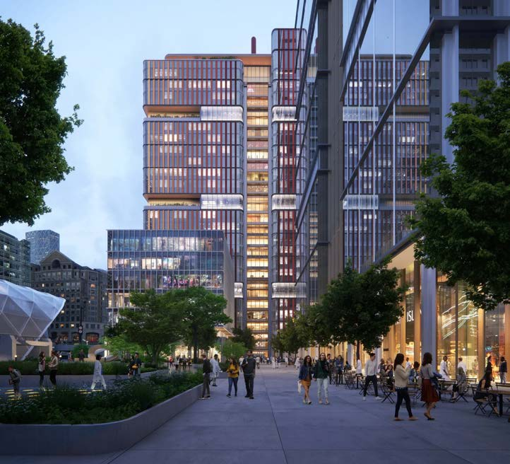

Europe's tallest purpose-built commercial lab building. I led the facade package and the BIM team.
A 23-story, 823,000 sq ft life-sciences tower at Canary Wharf. After early lab feasibility studies and test fits, I took the roughly 120-sheet terracotta curtain-wall package through RIBA Stage 4 and into construction support, coordinating facade engineers, manufacturers and cost consultants.
As BIM lead for a team of about ten, I coordinated 10–15 consultant models with clash detection in Revizto and built the curved, faceted and adaptive panel families. I also designed the public realm and landscape, and worked with glazing artists on the facade's color gradient.
- Client
- Canary Wharf Group and Kadans Science Partner
- Status
- Under construction, completing 2027
- Recognition
- MIPIM Awards 2024 finalist; Digital Construction Awards 2026 finalist
[Facade detail]
[Public realm]
[Massing studies]